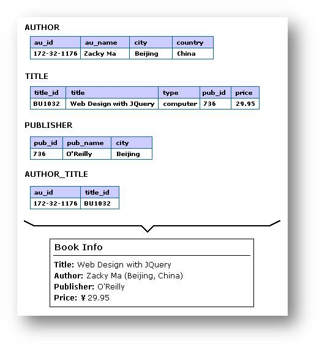

概念
组织系统
定义内容条目之间共有的特性，而且会影响这些条目的逻辑分组方式。
精确性组织体系——按字母顺序、按年表、按地理位置
模糊性组织体系——按主题、按任务、按用户、按隐喻（组织型隐喻，功能型隐喻，视觉性隐喻）、混用
隐喻是将用户的心智模型与系统功能进行完美匹配的最好方式。例如，回收站、文件夹都是隐喻运用，此处应特别小心，用户要能够准确理解隐喻的含义，如，数字图书馆被很多用户理解为具有管理图书功能的系统，应该可以回答找书时出现的问题，然而大多数数字图书馆并没有设计这样的服务。
定义内容条目和群组之间的关系类型
·等级式
自上而下的做法
·数据库模式
元数据可以让我们把关系型数据库的结构和威力，运用到异质性、非结构化的网站环境和企业网络环境中。使用元数据为其他信息对象打上标记，我们就可以进行有力的搜索、浏览、过滤，以及动态链接。

·超文本
超文本不是作为主要的组织结构，它可以弥补等级模式或数据库模式的不足。
一种高度非线性的结构化信息的方式，并且会使信息间的相关性较大。
·大众分类
标签是公开的，作为群体导航的枢纽。用户可以在对象、作者、标签及索引者之间顺畅地移动。当许多人参与时，有趣的机会就会出现，把用户行为和标签模式转换成新的组织和导航系统。

标记系统
（1）类型
情景式链接（即上下文链接）上下文链接是那些在页面中间出现的链接
标题（等级式标记，序列式标记）
导航系统选项：代表导航系统中选项的标记。
索引术语：供应搜索或浏览的关键词和标题词，关键词和标题词代表的是内容。
图标型标记
（2）标记一致性
在一个网络产品中，标记系统应该保持一些特质，尤其是一致性特质，一致性让你的标记系统容易具有可预测性，也就更容易学习。
标记系统的来源
你的现有网站
类似网站和竞争对手的网站
元数据
创建新的标签系统
内容分析
内容作者
用户代言人及主题作家（图书馆员、接线员、主题专家）
来自用户
导航系统
导航系统主要为浏览服务。
设计导航系统时，情境是第一位的。
用户应该一直知道他们在浏览那个网站。
以明确一致的风格，展现信息等级结构，且指出用户当前的位置。
搜索系统
在为网站构建搜索系统前，需要考虑以下几个问题
网站是否有足够的内容（50页或500页）
搜索系统会不会影响导航系统的使用，如果搜索使用太频繁，间接说明导航系统不便于浏览
是否有足够的时间和技术来优化搜索
时间、技术、预算方面有问题时，是否考虑用网站索引来代替搜索
搜索可以协助各个频道，帮助用户更快的找到各个频道下的信息
通过搜索日志分析，可以搜集和用户相关的数据（站内搜索优化）
如果网站有高度动态内容或更新，是否考虑建立搜索系统，如新闻类
搜索系统基本解析
搜索系统基本解析
搜索算法多采用模式匹配的方法
模式匹配是指将两个模式作为输入，计算模式元素之间语义上的对应关系的过程。在串中寻找子串（第一个字符）在串中的位置
有两个字符串T和Ｓ，字符串T称为正文，字符串S称为模式，要求找出模式S在正文T中的首次出现的位置。一旦模式S在正文T中找到，就说发生一次匹配。有些应用可能会要求找出所有的匹配位置。
在模式匹配中，子串称为模式，串称为目标。
全面与精准的矛盾
描述范围小则有更高的查准率。而范围大则有更高的查全率，但查准和查全有部分互斥的关系，所以要根据实际情况进行认真的调整和设计。


信息架构的成果方式
内容映射和清单
内容映射表格就是信息架构的自上而下和自下而上两种流程结合之处。详尽的内容映射流程包含把现存内容拆开或结合成内容块，使你能够把它们引入网站中。
内容映射流程的副产品就是内容清单。描述可用内容，以及哪里可以找到这些内容。另外也可以知道那些内容空白需要补充。
- 目录
螯合物(chelate)
由中心原子与多齿配体形成的环状配合物称为螯合物。
螯合效应(chelating effect)
于生成螯合物而使配合物稳定性大大增加的作用称为螯合效应。
螯合剂(chelating agent)
能与中心原子形成螯合物的多齿配体称为螯合剂。
“表观解离度”
(apparent degree of ionization)
实验测出的解离度，并不代表强电解质在溶液中的实际解离度，而仅仅反映了强电解质溶液中离子间相互牵制作用的强弱程度，故称“表观解离度”。
标准摩尔生成焓
(standard molar enthalpy of formation)
标准状态下，由稳定单质生成1mol物质B时的焓变称为物质B的标准摩尔生成焓，记为 。
标准摩尔生成Gibbs自由能
(standard molar free energy of formation)
在标准状态下，由最稳定单质生成1mol物质B时的Gibbs自由能，称为物质B的标准摩尔生成Gibbs自由能，符号 。
标准电极电势
(standard electrode potential)
在标准态下测得的某个氧化还原电对的电极电势，就是该氧化还原电对的标准电极电势(standard electrode potential)，符号用 oxd/red表示。
不等性杂化
(nonequivalent hybridization)
杂化后所形成的几个杂化轨道所含原来轨道成分的比例不相等而能量不完全相同，这种杂化称为不等性杂化（nonequivalent hybridization）